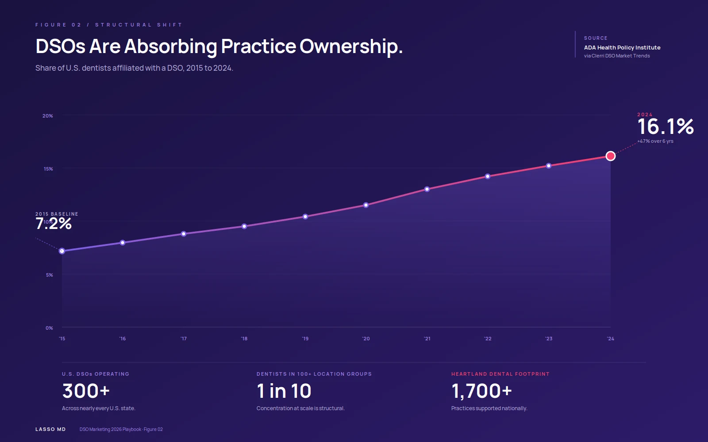
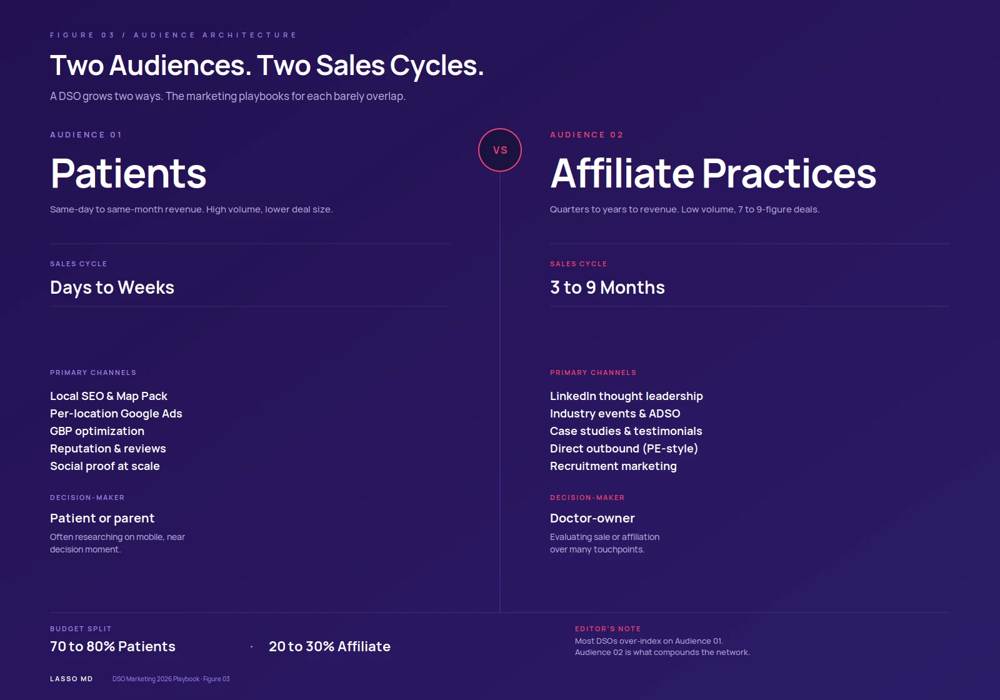
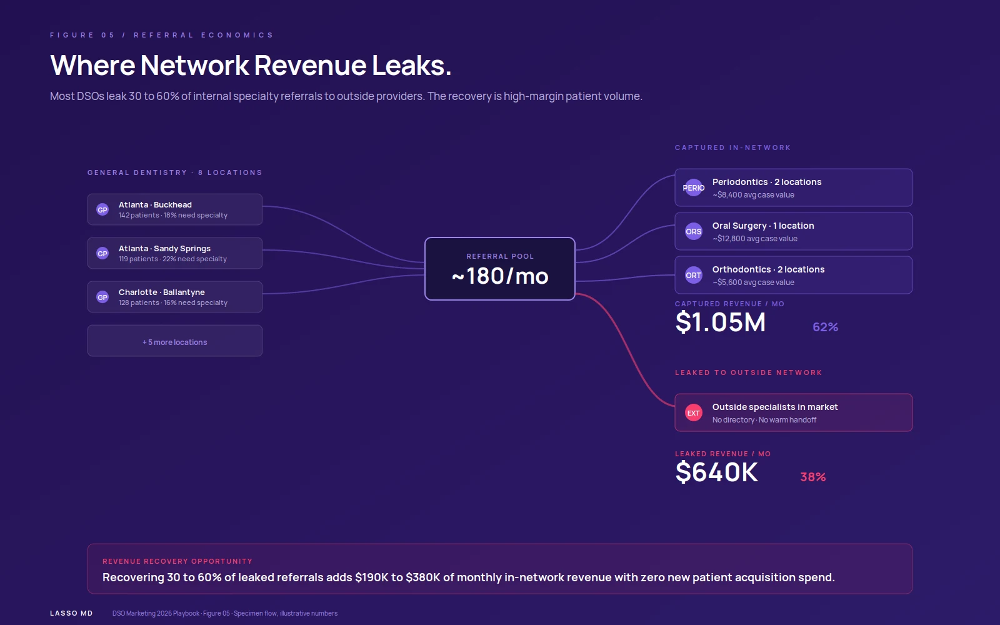
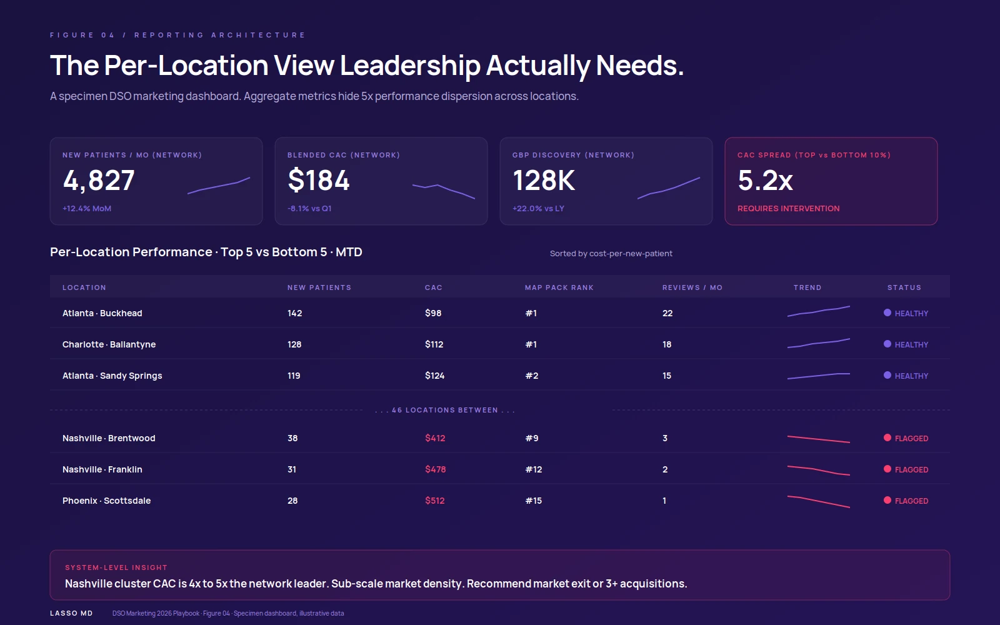

The US DSO market is on track to reach $223 billion by 2035, growing from $52 billion in 2026 at a 17.5% CAGR [1]. The share of US clinic teams affiliated with DSOs has more than doubled in less than a decade, from 7.2% in 2015 to 16.1% in 2024 [2]. Among clinic teams under 30, only 25% own their practices, compared to 55% in the 30-34 cohort. Every signal in the data points the same direction: practice ownership is being replaced by employment, and DSOs are absorbing the displaced demand.
That growth, however, has created a marketing problem that single-practice playbooks cannot solve. Running a DSO from 5 to 50 to 500 locations is not a linear scaling exercise. Each new practice multiplies the data sources, campaign permutations, attribution complexity, and reporting requirements. The marketing leader at a 200-practice DSO is solving a fundamentally different problem than the marketing director at a 5-practice group.
This playbook lays out the marketing architecture that actually scales: how to think about market density, how to handle two distinct audiences (patients and prospective affiliate practices), how to do local SEO at 100+ locations without breaking, how to structure paid media for cost-per-acquisition transparency by location, how to manage reputation across the network, and how to report performance so PE partners and CFOs can see the real picture. It is the system ClinicSoftware.ai's DSO clients use to grow patient volume and consolidate operational efficiency at the same time.
- Why DSO Marketing Is a Different Discipline
- The Market Density Strategy
- Two Audiences: Patient and Affiliate Acquisition
- Local SEO at Scale
- Centralized vs. Local Brand Architecture
- Paid Media at Scale
- Reputation Management Across the Network
- Cross-Location Referrals
- Measurement & Reporting
Why DSO Marketing Is a Different Discipline
Single-practice marketing optimizes one P&L. DSO marketing optimizes a portfolio of P&Ls with shared infrastructure, shared brand, and shared decision rights. Five things change fundamentally at scale:
- Two audiences instead of one. A solo practice markets to patients. A DSO markets to patients AND to prospective affiliate practices or doctors considering joining. The sales cycles, channels, and messaging for each are distinct, and both must be funded from the same marketing budget.
- Centralization vs. local autonomy tension. A national brand and centralized infrastructure (CMS, ad accounts, analytics) yield efficiency. But every individual location still competes in a hyper-local search environment where proximity and local trust signals dominate. The architecture has to support both.
- Per-location performance dispersion. In any 50+ location DSO, you will see 3x to 5x variance in cost per acquisition between best and worst performing locations. Aggregate metrics hide this. Reporting that does not break down to the practice level systematically misallocates budget.
- Capital intensity. DSOs typically have PE or institutional capital behind them. That capital comes with reporting obligations, ROI thresholds, and quarterly review cycles that solo practices never face. Marketing must produce attribution that meets that bar.
- Compliance complexity. Multi-state operation means navigating different clinic advertising regulations, HIPAA tracking restrictions on ad pixels, and corporate practice of clinicianry rules that vary by jurisdiction. Marketing infrastructure has to be built compliance-first, not retrofitted.

DSO affiliation among U.S. clinic teams, 2015 to 2024. Source: ADA Health Policy Institute.
The implication is that DSO marketing is closer to enterprise B2B marketing operations than to small-business marketing. The teams that succeed think about systems, attribution, and reporting first, and tactical campaigns second. ClinicSoftware.ai's clinic SEO services for DSO clients are built around this framing.
The Market Density Strategy: Why Geographic Clustering Beats Sprawl
The single biggest strategic mistake we see DSOs make is geographic over-expansion. When a group operates 8 practices in Atlanta and 2 in Nashville, the temptation is always to add 3 more Nashville locations to "fill out the market." The math usually says the opposite: 3 more Atlanta acquisitions will deliver materially higher ROI.
Three reasons market density wins:
- Marketing leverage. A regional Google Ads campaign optimized across 11 Atlanta locations costs less per acquisition than the same campaign spread across 5 Atlanta + 5 Nashville locations, because both Google's algorithm and your bid optimization have more data per market.
- Cross-location referrals. Patients in dense markets get referred between general clinicianry and specialty practices within the network. Sparse markets force out-of-network referrals.
- Operational efficiency. Regional marketing managers, regional ops, and regional supply chain all amortize over more locations. The fixed costs of "owning a market" are mostly fixed regardless of practice count, so each additional practice in an existing market improves margin.
The countervailing force is market saturation, where additional locations cannibalize existing ones. In clinic, true saturation rarely arrives before 8 to 12 practices in a metro area. Most DSOs spread thin long before they capture available patient volume in their core markets.
Until your top 3 markets have hit 80%+ Map Pack share for your priority service-line keywords, additional acquisitions in those markets typically beat new market entries.
Two Audiences: Patient Acquisition and Affiliate Acquisition
A DSO grows two ways: more patients per practice, and more practices in the network. Both are marketing problems, with very different shapes.

Patient marketing vs. affiliate marketing: two distinct sales cycles, two distinct playbooks.
Audience 1: Patients
This is the audience most DSOs over-index on, because it produces same-month revenue. Patient acquisition for a DSO is essentially "single-practice marketing, executed in parallel across N locations." The fundamentals are identical to a solo practice: local SEO, GBP optimization, paid search, reputation, and conversion. What changes is the scale and the per-location reporting requirement.
Service-line segmentation matters more in DSOs than solo practices. The portfolio is broader: pediatric, ortho, perio, oral surgery, cosmetic, sleep medicine, and general clinicianry are all served by different practices in the network. Marketing campaigns segmented by service line and patient profile (parents of young children for pediatric, adults 35-65 for implants, teens for ortho) routinely outperform undifferentiated "new patient special" campaigns. For implant-specific tactics, see ClinicSoftware.ai's Clinic Implant Marketing: The Complete 2026 Playbook. For local SEO at the per-practice level, see the Clinic Map Pack Local SEO Field Guide.
Audience 2: Affiliate practices
Affiliate acquisition is a longer, higher-stakes sales cycle. The decision-maker is a doctor-owner evaluating whether to sell their practice or join the network as an affiliate. Sales cycles run 3 to 9 months, deal sizes are 7 to 9 figures, and trust is the bottleneck.
Affiliate-side marketing channels look different:
- LinkedIn thought leadership from the CEO and operating leadership team
- Founder/owner-targeted content on practice valuation, transition mechanics, and post-affiliation experience
- Industry events (Group Clinicianry Now, ADSO Summit, regional DSO meetups)
- Doctor-led testimonials and case studies from existing affiliate practices
- Direct outbound to identified targets (typically PE-style sourcing motion)
- Recruitment marketing for associate clinic teams, which doubles as affiliate-side credibility
The affiliate-side marketing function looks more like investor relations than clinic growth. ClinicSoftware.ai often sees DSOs underfund this side of the equation: marketing leadership measures patient acquisition rigorously but treats affiliate acquisition as "BD's problem." When CMO and CGO disciplines come together on the affiliate side, the entire pipeline accelerates. For thought leadership content infrastructure, Transform Your Practice with Cutting-Edge Branding and Website Design covers the corporate-site fundamentals.
Local SEO at Scale: The Hardest Unsolved Problem in DSO Marketing
Local SEO does not scale automatically. Adding a 51st location does not get you 51x the visibility of one location. In fact, naive multi-location setups frequently see total network organic traffic decline after acquisitions, because of doorway-page penalties, NAP inconsistencies, and content cannibalization.
The architecture that actually works:
One CMS, many location pages
Centralize the web infrastructure on a single CMS with a templated location-page system. Each location gets a URL, a unique page, a Google Business Profile (GBP), and citation listings. The pages share design, navigation, and core content components but have unique service descriptions, team bios, photos, testimonials, and embedded GBP data per location.
Critical: never produce identical "boilerplate with city swap" location pages. Google flags template duplication aggressively and the entire site can be demoted, not just the duplicate pages.
Per-location GBP, professionally managed
Each location gets a dedicated GBP managed centrally with location-specific content. Categories, services, posts, and Q&A are all per-location. The local 3-Pack captures 44% of local clicks [3], so missing or weak per-location GBPs leave money on the table at every practice.
Citation infrastructure
Healthgrades, Zocdoc, ADA Find-a-Clinician, Yelp, BBB, state clinic association directories, and 30+ other sources need consistent NAP per location. At 50+ locations, this requires either an internal ops resource dedicated to citation management or a vendor with multi-location workflow support. Inconsistent NAP at network scale produces compounding ranking damage.
Centralized content, localized variants
Service-line content (clinic implants, Invisalign, sleep medicine, etc.) is centrally produced once, then localized to each location with city/region modifiers, local team mentions, and location-specific FAQs. This balances editorial efficiency (one team writes the implants page) with local relevance signals Google requires for ranking.
For the GBP optimization specifics every location should follow, see ClinicSoftware.ai's Clinic Map Pack Local SEO Field Guide. Layer that on top of network-level architecture.
Centralized vs. Local Brand: Finding the Right Architecture
There are essentially three brand architectures in DSO marketing:
| ARCHITECTURE | BRAND EFFICIENCY | LOCAL TRUST | BEST FOR |
|---|---|---|---|
| Single brand | High | Low | 200+ location DSOs running national campaigns |
| Independent names | Low | High | Early-stage groups under 20 practices |
| Hybrid RECOMMENDED | Medium | Medium-High | Most DSOs at 20-200 practices |
The right architecture depends on growth stage. Early-stage DSOs (under 20 practices) typically benefit from independent or hybrid models. Mature DSOs at 200+ locations often consolidate to single-brand for marketing efficiency, accepting the local trust trade-off in exchange for the ability to run national campaigns. Heartland Clinic, the largest US DSO, supports 1,independent healthcare practices nationwide [4], demonstrating the scale that single-brand architecture can support.
Reputation management decisions follow the same logic. A negative review at one location under a single-brand DSO affects every location's perception. A negative review under independent branding is contained to that practice. For a deeper treatment, see ClinicSoftware.ai's Beyond Reviews: How Reputation Marketing Is Redefining Patient Acquisition.
Paid Media at Scale: Account Structure and Attribution
PPC at the DSO level produces dramatically different ROI depending on how the ad account is structured. Three common configurations, in order from worst to best:
- One mega-account targeting "the network." Broad keyword sets, generic ad copy, single landing page. Cheapest to manage but burns budget on irrelevant clicks across markets where your practice density does not support strong conversion.
- One account per location. Each practice runs its own Google Ads. Maximally relevant per location, but loses bidding optimization data, multiplies management overhead, and produces fragmented reporting.
- Centralized account, location-specific campaign structure. One Google Ads account at the DSO level, with each location as a campaign or campaign group. Geo-targeted at the location level, with location-specific ad copy and landing pages. Bid optimization runs on aggregate signal but spend allocates per location based on per-location ROI.
The third configuration dominates in practice. It produces the visibility of dedicated location accounts with the efficiency of centralization. It also enables the per-location cost-per-acquisition reporting that PE-backed leadership actually needs. For service-line specific PPC tactics that compound on top of this structure, see ClinicSoftware.ai's Top 5 Highest-Performing PPC Campaigns for Clinic Teams.
Attribution is the underrated piece. Most DSO ad accounts measure cost per click and cost per lead. The metrics that actually matter to leadership are cost per booked appointment, cost per attended visit, and cost per case accepted, segmented by service line and by location. Bridging from CPL to CPA-by-procedure is where call tracking, lead-routing, and PMS integration earn their keep.
Reputation Management Across the Network
At one location, reputation management is a workflow. At 50 locations, it is a system. The mechanics:
- Centralized review request automation that fires after each appointment, ideally within 60 to 90 minutes, with a direct link to that location's GBP review form.
- Per-location response routing so the right team member responds to each review within 24 to 48 hours. Response rate is itself a ranking signal and a brand-trust signal at the network level.
- Negative review escalation workflow that routes 1 to 3 star reviews to a regional manager or central support function before it sits unresponded for days.
- Network-level review velocity dashboards that flag locations falling below 8 reviews per month so they can be prioritized for additional support before rankings drop.
- Brand-level monitoring on Google, Yelp, Healthgrades, Zocdoc, and major social platforms (because patients researching one location often see other-location reviews when searching the brand).
AI-assisted review response is increasingly viable. The risk is template-feeling responses that erode the trust signal reviews are supposed to convey. The discipline is to use AI to draft, never to send unedited. For more on AI as it integrates across the patient acquisition funnel, see Mastering AI Search Visibility for Clinic Teams and AI, GEO, AEO, and LLMO: How ClinicSoftware.ai Is Future-Proofing Clinic SEO.
Cross-Location Referrals: Keeping Revenue in the Network
A DSO's most overlooked patient acquisition channel is its own existing patient base. When a general clinicianry patient at one location needs implants, ortho, perio, or oral surgery, they should be routed to a specialty practice within the DSO network, not referred outside. In practice, most DSOs leak 30% to 60% of these referrals to outside specialists because the network referral mechanism is informal or absent.

Specimen DSO referral flow: 62% captured in-network, 38% leaked to outside specialists.
What "good" looks like:
Specialty-side DSOs (pediatric, ortho, oral surgery) have higher case values and higher cash flow margins than general clinicianry [5], which is exactly why preventing internal referral leakage is so financially important.
Measurement: What PE Partners and CFOs Actually Need to See
DSO marketing reporting fails most often not because data is missing, but because it is presented at the wrong level of aggregation. Leadership needs both views simultaneously.

A specimen DSO marketing dashboard. Aggregate metrics hide a 5x performance dispersion across locations.
Network-level KPIs
- Total new patients added across all locations, monthly trend
- Blended cost per new patient at the network level
- Aggregate organic search visibility (share of voice across priority keywords across all markets)
- Aggregate review volume + average rating
- Marketing spend as a % of revenue, with comparable industry benchmarks
Per-location KPIs
- New patients per location, monthly
- Cost per acquisition per location, with variance flags
- Map Pack rankings for top 5 service-line keywords per location
- Review velocity per location
- Phone call volume + answer rate per location
- Lead-to-booked-appointment conversion per location
The bridge between marketing-attributable activity and PMS-recorded revenue is the single most important reporting capability a DSO marketing function builds. ClinicSoftwareTM Growth Software was built specifically for this attribution problem in multi-location clinic, with AI Receptionist and Journey Insights tying source data through call and form to PMS-recorded revenue, segmented by location and procedure. Online Scheduling captures the conversion at every location's GBP and website. The downstream value matters: Unlocking Lead Conversion: How AI Call Grading Transforms Patient Intake covers what happens after the lead lands at the practice front desk, where most DSOs lose 25% to 40% of attributable spend.
Common DSO Marketing Mistakes
Eight failure modes we see consistently:
- Reporting only at the network level. Aggregate metrics hide a 5x to 10x dispersion in per-location performance.
- Geographic over-expansion before market saturation. Adding a new metro before extracting full value from the existing 3 hurts ROI.
- Underfunding the affiliate-acquisition side of marketing relative to patient-acquisition side.
- Using boilerplate location pages with city-swap content. Google demotes the entire site, not just those pages.
- Running PPC at the location level with no centralized account, fragmenting reporting and losing bid optimization signal.
- Treating reputation management as a workflow rather than a system, leaving 1 to 3 star reviews unresponded for weeks.
- Ignoring internal referral leakage during diligence. New acquisitions should arrive with a referral capture plan.
- Tracking pixels deployed across all location websites without HIPAA review, creating compliance exposure that can be expensive in M&A diligence.
Conclusion: The Discipline of Compounding at Scale
DSO marketing is not single-practice marketing repeated 50 times. It is a different discipline that combines enterprise B2B marketing operations, hyper-local SEO, and capital-stewardship-grade reporting in a single function. The DSOs that compound year over year are the ones that build the systems first and run tactical campaigns on top of them, not the reverse.
The practical priority order, if you are starting from a less mature place: build per-location reporting infrastructure first, fix local SEO architecture and per-location GBPs second, structure paid media with centralized account + location-level campaigns third, formalize reputation management as a system fourth, and address internal referral leakage as the highest-ROI patient-acquisition channel fifth. Affiliate-side marketing runs in parallel with all of this and deserves its own budget line and its own sales-cycle metrics.
- Centralize infrastructure, decentralize execution. CMS, ad accounts, and analytics live at the network level. Local GBP posts and community engagement stay per-location.
- Per-location reporting is non-negotiable. Network averages hide 5x dispersion in cost-per-acquisition between best and worst locations.
- Market density beats geographic sprawl. Three more practices in your strongest market typically outperform a new market entry.
- Internal referral leakage is the highest-ROI channel most DSOs ignore. Recovering 30 to 60% of leaked specialty referrals adds material monthly revenue with zero acquisition spend.
References
References (5 sources) — click to expand
[1] US DSO market valued at $52.38B in 2026, projected to reach $223.47B by 2035 at a 17.51% CAGR.
Source: Precedence Research, Feb 2026.
https://www.precedenceresearch.com/us-clinic-support-organizations-market
[2] US DSO affiliation rose from 7.2% of clinic teams in 2015 to 16.1% in 2024.
Source: ADA Health Policy Institute.
https://www.ada.org/resources/research/health-policy-institute
[3] Local 3-Pack receives 44% of local search clicks (vs. 29% organic, 19% paid).
Source: Moz Local Search Ranking Factors.
https://moz.com/local-search-ranking-factors
[4] Heartland Clinic supports 1,independent healthcare practices nationwide.
Source: Heartland Clinic.
https://heartland.com/
[5] Global DSO market: $226.74B in 2026 to $942.56B by 2035 (17.2% CAGR).
Source: Globe Newswire / Precedence Research.
https://www.globenewswire.com/news-release/2026/02/23/3242517/